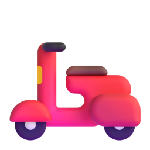

From Zero
to Hero
Data Collection, Statistical Inference, Regression, Visualization & Artificial Intelligence — Units 5, 6 & 7.
رحلة متكاملة من جمع البيانات وتنظيفها لحد التحليل والذكاء الاصطناعي.
From Zero to Hero
From Zero to Hero
جميع حقوق الطبع والنشر والتأليف محفوظة للمؤلف. يُمنع منعاً باتاً تصوير أو نسخ أو طباعة أو تداول هذا الكتاب أو أي جزء منه بأي وسيلة ورقية أو إلكترونية بدون إذن كتابي مسبق.
«هذا العمل ثمرة جهد وتعب كبير، ولا أُسامح ولا أُحلل شرعاً أو قانوناً أي شخص يقوم بسرقته أو نسخه أو نشره أو الاستفادة منه دون وجه حق.»
 Unit 5: Data Collection & Cleaning
Unit 5: Data Collection & Cleaning
Methods of Data Collection
Every analysis rests on its data. Before any chart, model, or conclusion, you decide what to collect, from whom, and how.
كل تحليل ناجح بيبدأ من بيانات صح؛ قبل ما ترسم أو تستنتج، قرر هتجمع إيه ومن مين وإزاي.
Methods of Data Collection
 68m Delay!
68m Delay!



Comparison: Primary vs Secondary Data
Definition, examples, strengths, and constraints
| Dimension | Primary Data | Secondary Data |
|---|---|---|
| Definition | Newly collected by you to fit a specific purpose | Already collected and made public by others |
| Examples | Surveys, interviews, observations, experiments | Open datasets, existing statistics, industry reports |
| Main Strength | Tailored, original & reliable (core of analysis) | Large scale & fast to obtain |
| Main Constraint | Takes time, effort, and financial cost | May not fit purpose; hidden bias or omissions |

Comparison: Random Sampling Methods
Simple random sampling vs Stratified sampling
| Dimension | Simple random sampling | Stratified sampling |
|---|---|---|
| How It Works | Choose a sample from the population purely by chance, without bias. | Divide population into strata (gender, age group), then randomly choose from each stratum. |
| When to Use | Most basic method; works even when little is known about the population. | Reflects population ratios; reduces bias when differences between strata affect results. |
| مثال واقعي | اختيار 50 طالبًا بالقرعة العشوائية من كشف يضم 1000 طالب في المدرسة. | تقسيم طلاب المدرسة لصفوف (أولى وتانية وتالتة) ثم اختيار عينة عشوائية من كل صف بنفس نسبته. |

Key Sampling Terms (قاموس مصطلحات العيّنات)
5 مصطلحات أساسية لازم تفرّق بينهم في أسئلة الامتحان
| Term | Meaning | المعنى بالعربي |
|---|---|---|
| Population | Everyone in the entire target group | المجتمع: الجميع (كل الفئة المستهدفة) |
| Sample | The selected part you actually ask | العيّنة: الجزء المختار اللي بتسأله |
| Census | Ask everyone in the whole population | التعداد: تسأل الجميع بدون استثناء |
| Strata (plural) | Subgroups that divide the population | الطبقات (جمع): المجموعات الفرعية للمجتمع |
| Stratum (singular) | One single subgroup on its own | الطبقة (مفرد): مجموعة فرعية واحدة فقط |
Comparison: Sampling Bias vs. Selection Bias vs. Measurement Error
Core bias & error categories with real-world examples
| Dimension | Sampling Bias | Selection Bias | Measurement Error |
|---|---|---|---|
| Description | Happens when the sample does not represent the whole population. | Happens when the way people are chosen makes the sample unfair. | Happens when recorded data is different from the real values. |
| الشرح بالعربي | بتحصل لما العيّنة متكونش ممثلة للمجتمع كله. | بتحصل لما طريقة اختيار الأشخاص تخلي العيّنة غير عادلة. | بتحصل لما البيانات المسجلة تختلف عن القيم الحقيقية. |
| مثال واقعي | عمل استطلاع عن مستوى الطلاب في المدرسة بسؤال طلاب الفصل المتفوق فقط، فلا يمثل باقي الطلاب. | اختيار الطلاب المشاركين في مسابقة من أصحاب الدرجات العالية فقط، مما يجعل الاختيار غير عادل. | سؤال طالب عن عدد ساعات مذاكرته فيقول 5 ساعات بينما هو ذاكر 3 ساعات فقط، أو استخدام ميزان غير دقيق. |
| Dimension | Self-selection bias | Time/location bias | Response bias |
|---|---|---|---|
| Category | Selection Bias | Selection Bias | Measurement Error |
| Description | Only people who want to participate respond. | The survey time or place excludes some people. | People give answers that are not true or accurate. |
| الشرح بالعربي | بيشارك الأشخاص اللي عايزين يشاركوا بس. | وقت أو مكان الاستبيان بيستبعد بعض الأشخاص. | الأشخاص بيدّوا إجابات غير حقيقية أو غير دقيقة. |
| مثال واقعي | استبيان عن صعوبة الامتحان يشارك فيه الطلاب اللي عندهم رأي قوي بس. | عمل استبيان عن المواصلات أمام محطة المترو الساعة 10 مساءً، فيستبعد مستخدمي الصباح. | طالب يقول إنه بيذاكر 5 ساعات يومياً، رغم إنه بيذاكر ساعتين بس. |

Classwork
Lesson 1: Methods of Data Collection — In-Class Practice (50 Questions)
Homework
Lesson 1: Methods of Data Collection — Take-Home Assignment (100 Questions)
Data Cleaning & Transformation
Handle missing values, detect outliers and duplicates, unify data types, normalize scales, and reshape datasets.
إزاي تعالج القيم الناقصة والشاذة والمكررة وتجهز بياناتك للتحليل.
Data Cleaning & Transformation
Comparison: Data Cleaning vs. Transformation
Clean first, transform next, then analyze
| Dimension | Data Cleaning (التنظيف) | Data Transformation (التحويل) |
|---|---|---|
| Includes | Missing values, outliers, and duplicates | Data types, scaling, and reshaping |
| يشمل بالعربي | المفقود والشاذ والمكرر | الأنواع والقياس وإعادة التشكيل |
| القاعدة الذهبية | الحساب الدقيق على بيانات غلط بيدّيك نتيجة غلط بشكل دقيق جداً! نضّف الأول وبعدين حلّل. | |
Comparison: Handling Missing Values
Key differences at a glance
| Dimension | Deletion (الحذف) | Imputation (التعويض) | Flagging (الوسم) |
|---|---|---|---|
| Description | Remove rows or columns containing missing values | Fill in with the mean, median, or surrounding values | Leave a marker that the value was missing and analyze as is |
| When to Apply | Few missing values; small impact on the whole | Scattered without bias; does not change overall trend | Missingness itself has meaning (e.g., refused to answer) |
| مثال واقعي | حذف صف به خلية فارغة من استبيان: | ملء درجات غياب عشوائية قليلة بمتوسط الفصل: | وضع علامة «رفض الإجابة» بدل ترك الخانة فارغة: |
Comparison: Outliers vs. Duplicate Data
When to remove, correct, or keep unusual and repeated records
| Dimension | Outliers (القيم الشاذة) | Duplicates (البيانات المكررة) |
|---|---|---|
| Description | Values that differ greatly from others. They may be errors (correct or remove) or real events (keep if useful). | Repeated records that may affect data analysis and produce incorrect results. |
| How to Handle | Input error (Abnormal) → Correct or remove. Real event (e.g. promo day) → Keep & decide by purpose. | Remove only when the same record is repeated by mistake—keep real separate events. |
| مثال واقعي | لكل حالة تعامل مختلف (تصحيح، حذف، أو إبقاء): | نحذف الفاتورة المكررة بالخطأ (#101 مرتين) ونسيب عمليتين شراء حقيقيتين (#101 و#102): |
Comparison: Data Type Conversion
Key differences at a glance
| Dimension | String to Numeric (من نص لرقم) | Unification of Date Format (توحيد التاريخ) | Unification of Notation (توحيد الكتابة) |
|---|---|---|---|
| Description | Convert numbers stored as strings into numeric values usable in calculations | Align dates with different notations into a single format | Combine values with the same meaning into a single notation |
| مثال واقعي | تحويل السعر المخزّن كنص "123" إلى رقم 123 لنقدر نجمعه. | توحيد تواريخ مثل "2026/4/1" و"01 Apr 2026" إلى صيغة واحدة 2026-04-01. | توحيد كتابة النوع من "M/F" و"Male/Female" إلى صيغة واحدة موحدة. |
Comparison: Reshaping Operations
Key differences at a glance
| Dimension | Pivot (التدوير) | Join (الربط) | Aggregation (التجميع) |
|---|---|---|---|
| Description | Reshape vertically arranged data into row × column table | Connect multiple datasets via a common item | Calculate sums, means, etc. for each group |
| مثال واقعي | تدوير الشكل فقط (نفس القيم تتحول لصف × عمود): | ربط جدول الأسماء بالدرجات عبر ID: | جمع الفواتير المتكررة في صف إجمالي لكل شهر: |
Comparison: Aggregation Operations
SUM, MEAN / AVG, COUNT, MIN, and MAX at a glance
| Dimension | SUM | MEAN / AVG | COUNT | MIN | MAX |
|---|---|---|---|---|---|
| Purpose | Total sum of values in each group | Average value of each group | Number of items in each group | Smallest value in each group | Largest value in each group |
| مثال واقعي | مجموع الدرجات: | متوسط الدرجات: | عدد الطلاب: | أقل درجة: | أكبر درجة: |
sales against the target
Comparison: Normalization vs. Standardization
Key differences at a glance
| Dimension | Normalization (التطبيع) | Standardization (التوحيد المعياري) |
|---|---|---|
| Description | Convert data to a range from 0 to 1 | Convert data to mean 0 and standard deviation 1 |
| Main Purpose | Align data with different units into a comparable form | Position values relative to the spread of the data |
| مثال واقعي | تحويل أطوال الطلاب (160–180 سم) لنطاق موحد من 0 إلى 1. | مقارنة درجة طالب في الرياضيات والفيزياء بمعرفة بُعده عن المتوسط. |
| x | x̄ | x − x̄ | (x − x̄)2 |
|---|---|---|---|
| 60 | 70 | −10 | 100 |
| 60 | 70 | −10 | 100 |
| 80 | 70 | +10 | 100 |
| 80 | 70 | +10 | 100 |
| Σ = 280 | — | Σ = 0 | Σ = 400 |
| x | x̄ | x − x̄ | (x − x̄)2 |
|---|---|---|---|
| 60 | 70 | −10 | 100 |
| 60 | 70 | −10 | 100 |
| 80 | 70 | +10 | 100 |
| 80 | 70 | +10 | 100 |
| Σ = 280 | — | Σ = 0 | Σ = 400 |
Classwork
Lesson 2: Data Cleaning & Transformation — In-Class Practice (65 Questions)
| Date | Item | Qty |
|---|---|---|
| D1 | Tea | 5 |
| D1 | Cof | 3 |
| D2 | Tea | 4 |
| D2 | Cof | 2 |
| Date | Tea | Cof |
|---|---|---|
| D1 | 5 | 3 |
| D2 | 4 | 2 |
| Mo | ID | Amt |
|---|---|---|
| Jan | P1 | 100 |
| Jan | P2 | 50 |
| Feb | P1 | 80 |
| Feb | P2 | 120 |
| ID | Cat |
|---|---|
| P1 | Food |
| P2 | Drink |
| Cat | Total |
|---|---|
| Food | 180 |
| Drink | 170 |
Homework
Lesson 2: Data Cleaning & Transformation — Take-Home Assignment (110 Questions)
| Cls | Val |
|---|---|
| A | 70 |
| A | 80 |
| A | 90 |
| B | 50 |
| B | 60 |
| Day | Shop | Qty |
|---|---|---|
| Mon | A | 5 |
| Mon | A | 3 |
| Mon | B | 4 |
| Tue | A | 6 |
| Cls | Val |
|---|---|
| A | 80 |
| A | 90 |
| A | 1000 |
| B | 60 |
| B | 70 |
Open Data and APIs
Understand open data principles, evaluate reliability and licenses, and fetch live data using REST APIs and JSON.
إزاي تستفيد من البيانات المفتوحة وتسحب بيانات حية عبر الـ APIs بصيغة JSON.
Comparison: Major International Open Data Providers
World Bank Open Data, UN Data, and Kaggle
| Dimension | World Bank Open Data | UN Data | Kaggle |
|---|---|---|---|
| Description | Country stats: economy, population, education & health. | World stats from the UN and its agencies. | Data contests platform with free public datasets. |
| Main Uses | Compare countries & track social/economic trends. | Study global issues: population, growth & environment. | Get data for machine learning and research. |
| مثال واقعي | مقارنة التعليم والصحة والاقتصاد بين مصر وغيرها. | تحليل النمو السكاني والبيئة من تقارير الأمم المتحدة. | تنزيل بيانات جاهزة لتدريب نماذج تعلم الآلة. |
Comparison: API vs. JSON
How they differ and work together
| Dimension | API (Application Programming Interface) | JSON (JavaScript Object Notation) |
|---|---|---|
| Description | Rules & system for software to exchange data (frontend ↔ backend) directly with no browser. | Main API data format; stores data as name–value pairs, easy for humans & code to read. |
| الشرح بالعربي | نظام وقواعد لتبادل البيانات بين البرامج (الواجهة الأمامية والخلفية) مباشرة من غير متصفح. | أشهر صيغة للرد في شكل (اسم : قيمة)، سهلة القراءة للبشر والبرمجة. |
| مثال واقعي | رابط الطلب: https://api.data.com/v1/egypt | البيانات الراجعة: {"country": "Egypt"} |
1) Follow the terms of use.
2) Do not send excessive requests in a short time.
3) Confirm the allowed scope of use.
1) التزم بشروط الاستخدام (Terms of Use).
2) متبعتش طلبات كتير في وقت قصير.
3) اتأكد من نطاق الاستخدام المسموح للبيانات.
Classwork
Lesson 3: Open Data and APIs — In-Class Practice (50 Questions)
Homework
Lesson 3: Open Data and APIs — Take-Home Assignment (100 Questions)
 Unit 6: Analysis & Communication
Unit 6: Analysis & Communication
Statistical Inference
Draw reliable conclusions about populations from samples using confidence intervals, p-values, and hypothesis testing.
إزاي تاخد قرارات واثقة عن المجتمع كله من عيّنة باستخدام فترات الثقة واختبار الفروض.
Statistical Inference
أي استنتاج فيه نسبة عدم يقين، وبنقيسها بفترات الثقة واختبار الفروض.
Comparison: Two Ways of Inference
Estimation vs. Hypothesis Testing
| Dimension | Estimation (التقدير) | Hypothesis Testing (اختبار الفروض) |
|---|---|---|
| Goal | Guess a population number from a sample. | Check if a claim about the population is true. |
| الشرح بالعربي | بنقدّر رقم يخص المجتمع (زي متوسط الطول) من العيّنة. | بنختبر فكرة أو ادعاء هل هو حقيقي ولا مجرد صدفة. |
| مثال واقعي | نحسب متوسط طول 100 طالب عشان نقدّر متوسط طول المدرسة كلها. | نختبر هل طريقة المذاكرة الجديدة بتجيب درجات أعلى من القديمة. |
Comparison: Point vs. Interval Estimation
One number vs. a safe range
| Dimension | Point Estimation (تقدير بنقطة) | Interval Estimation (تقدير بفترة) |
|---|---|---|
| Output | One single value (e.g., 168 cm). | A range of values (e.g., 166 cm to 170 cm). |
| Uncertainty | Easy to read, but hides uncertainty. | Shows how wide the uncertainty is. |
| الشرح بالعربي | بيدي رقم واحد بس. سهل تفهمه بس مش بيبين نسبة الخطأ. | بيدي مدى (فترة ثقة) من رقم لرقم. بيوريك إحنا متأكدين قد إيه. |
| مثال واقعي | نقول متوسط درجات الفصل هو 75 درجة بالظبط. | نقول متوسط درجات الفصل بين 72 و78 درجة بنسبة ثقة 95%. |
Comparison: Null vs. Alternative Hypothesis
H0 vs. H1
| Dimension | Null Hypothesis (H0) | Alternative (H1) |
|---|---|---|
| Meaning | Starting claim: "no difference". | New claim: "there is a difference". |
| الشرح بالعربي | فرض العدم: مفيش فرق أو تأثير. | الفرض البديل: فيه فرق حقيقي. |
| Comparison | Case 1 = Case 2 | Case 1 ≠ Case 2 |
| مثال واقعي | طريقة المذاكرة الجديدة زي القديمة، مفيش فرق في الدرجات. | طريقة المذاكرة الجديدة مختلفة عن القديمة وبتجيب درجات مختلفة. |
Comparison: Two Key Terms
p-value & Significance Level (α)
| Dimension | p-value | Significance Level (α) |
|---|---|---|
| Meaning | The probability of getting the result by chance if H0 is true. | The limit we choose to decide if a result is significant. |
| الشرح بالعربي | احتمال ظهور النتيجة بالصدفة لو الفرضية الصفرية (H0) صحيحة. | الحد اللي بنحدده عشان نقرر إذا كانت النتيجة مهمة إحصائياً ولا لأ. |
| مثال واقعي | بنقارن طريقة المذاكرة الجديدة بالقديمة، ولقينا إن احتمال ظهور فرق بين درجاتهم بالصدفة، رغم إن الطريقتين مفيش بينهم فرق حقيقي، هو 4%، وإحنا محددين الحد المسموح للصدفة بـ 5%. يبقى 4% = p-value و5% = (α). | |
Comparison: Choosing the Right Test
Numbers vs. Categories
| Dimension | t-test (اختبار t) | Chi-squared Test (مربع كاي) |
|---|---|---|
| Data type / نوع البيانات | Numbers (scores, heights) / أرقام (درجات، أطوال) | Categories (boy/girl, favorite subject) / فئات (ولد/بنت، مادة مفضلة) |
| When to Use | Compare the means of two groups. | Check link between two categorical variables. |
| الشرح بالعربي | يقارن متوسط درجات أو أرقام بين مجموعتين. | يشوف فيه علاقة بين فئتين (زي النوع والمادة) ولا لأ. |
| مثال واقعي | مقارنة متوسط درجات فصلين اتعلموا بطريقتين مختلفتين. | هل فيه علاقة بين النوع (ولد/بنت) والمادة المفضلة؟ |
Comparison: Type I Error vs. Type II Error
Every test has a trade-off
| Dimension | Type I Error | Type II Error |
|---|---|---|
| What Happened? | Rejecting H0 when H0 is actually true (false alarm). | Keeping H0 when H0 is actually false (a miss). |
| الشرح بالعربي | إنذار كاذب: رفضنا H0 وقلنا فيه فرق مع إن مفيش فرق. | تفويت الحقيقة: قبلنا H0 مع إن فيه فرق حقيقي موجود. |
| مثال واقعي | نقول الدواء الجديد بيعالج وهو في الحقيقة ملوش تأثير. | نقول الدواء فاشل وهو في الحقيقة بيعالج المرضى. |
2. p صغير مش معناه إن الفرق كبير، معناه بس إن الدليل على وجود فرق قوي.
3. الرقم 0.05 دليل مساعد مش حكم مطلق.
Classwork
Lesson 1: Statistical Inference — In-Class Practice (54 Questions)
Homework
Lesson 1: Statistical Inference — Take-Home Assignment (100 Questions)
 Unit 6: Analysis & Communication
Unit 6: Analysis & Communication
Regression Analysis & Evaluation
Model relationships between variables, predict outcomes, and evaluate fit using R-squared and residuals.
إزاي تتوقع القيم المستقبلية بمعادلات الانحدار وتقيس دقتها بـ R² والبواقي.
Use & Evaluation of Regression Analysis
Comparison: Input, Output, and Model
The building blocks of regression
| Dimension | Explanatory Variable (x) | Response Variable (y) | Model (النموذج) |
|---|---|---|---|
| Role | The input used to predict. | The output/result predicted. | The equation linking x and y. |
| الشرح بالعربي | المتغير التفسيري (المدخل) اللي بنتوقع بيه. | المتغير التابع (النتيجة) اللي عايزين نتوقعه. | معادلة رياضية مبسطة بتمثل العلاقة الحقيقية. |
| مثال واقعي | درجة الحرارة اليومية (x). | مبيعات الآيس كريم (y). | y = 20x − 300. |
Comparison: Simple vs. Multiple Regression
One input vs. many inputs
| Dimension | Simple Regression | Multiple Regression |
|---|---|---|
| Inputs (x) | One explanatory variable: y = ax + b | Two or more inputs: y = a₁x₁ + a₂x₂ + b |
| Strength | Simple and easy to understand. | Handles complex real-life problems better. |
| الشرح بالعربي | بنستخدم متغير واحد بس للتوقع (خط مستقيم). | بنجمع كذا متغير مع بعض عشان التوقع يبقى أدق. |
| مثال واقعي | توقع مبيعات الآيس كريم من درجة الحرارة بس. | توقع سعر الشقة من مساحتها + عمرها + قربها للمترو. |
Comparison: R², RMSE, and MAE
How we measure prediction accuracy
| Dimension | R² | RMSE | MAE |
|---|---|---|---|
| Measures | Variance explained (0 to 1). | Square root of mean squared errors. | Mean of absolute errors. |
| Best Value | Closer to 1 is better. | Smaller is better (sensitive to outliers). | Smaller is better (less swayed by outliers). |
| الشرح بالعربي | نسبة تفسير النموذج للبيانات (كل ما يقرب لـ 1 أحسن). | بيقيس الخطأ وبيتأثر جامد بالقيم الشاذة (Outliers). | متوسط الخطأ العادي ومبيتأثرش أوي بالقيم الشاذة. |
| مثال واقعي | R² = 0.85 يعني النموذج بيشرح 85% من التغير. | نستخدمه لما الغلطة الكبيرة بتكلفنا خسارة فادحة. | نستخدمه لما يهمنا متوسط الخطأ اليومي العادي. |
| x | 2 | 4 | 6 |
|---|---|---|---|
| y | 6 | 10 | 14 |
| x | 1 | 2 | 3 |
|---|---|---|---|
| Actual (y) | 3 | 4 | 8 |
| x | y | x − x̄ | y − ȳ | (x − x̄)(y − ȳ) | (x − x̄)² | ŷ | e (y − ŷ) | |e| | e² |
|---|---|---|---|---|---|---|---|---|---|
| 1 | 3 | −1 | −2 | +2 | 1 | 2.5 | +0.5 | 0.5 | 0.25 |
| 2 | 4 | 0 | −1 | 0 | 0 | 5.0 | −1.0 | 1.0 | 1.00 |
| 3 | 8 | +1 | +3 | +3 | 1 | 7.5 | +0.5 | 0.5 | 0.25 |
| Σ | — | 0 | 0 | 5 | 2 | — | 0 | 2.0 | 1.50 |
Classwork
Lesson 2: Regression Analysis & Evaluation — In-Class Practice (72 Questions)
| x | 3 | 5 | 7 |
|---|---|---|---|
| y | 4 | 8 | 12 |
| x | 2 | 4 | 6 |
|---|---|---|---|
| y | 50 | 70 | 90 |
| x | 1 | 2 | 3 |
|---|---|---|---|
| y | 2 | 5 | 5 |
Homework
Lesson 2: Regression Analysis & Evaluation — Take-Home Assignment (124 Questions)
| x | 1 | 3 | 5 |
|---|---|---|---|
| y | 5 | 9 | 13 |
| x | 10 | 20 | 30 | 40 |
|---|---|---|---|---|
| y | 2 | 4 | 6 | 8 |
| x | 2 | 4 | 6 |
|---|---|---|---|
| y | 10 | 14 | 18 |
| x | 1 | 2 | 3 | 4 |
|---|---|---|---|---|
| y | 4 | 7 | 10 | 11 |
| x | 1 | 2 | 3 |
|---|---|---|---|
| y | 4 | 5 | 9 |
| x | 2 | 4 | 6 |
|---|---|---|---|
| y | 8 | 12 | 16 |
| x | 1 | 2 | 3 |
|---|---|---|---|
| y | 3 | 4 | 8 |
 Unit 6: Analysis & Communication
Unit 6: Analysis & Communication
Data Visualization & Communication
Choose the right chart for every data story, avoid misleading axes, and communicate insights clearly.
إزاي تختار الرسم البياني الصح وتعرض نتايجك بوضوح من غير ما تخدع القارئ.
Data Visualization & Communication
Comparison: All 5 Charts (Categories vs. Numbers)
Which data type each chart uses & what it is best for
| Chart | Data Type (نوع البيانات) | Best Used For (الاستخدام) | Quick Example |
|---|---|---|---|
| Bar Chart | Categories + Numbers | Comparing values across separate groups. | Average quiz score per class (A, B, C). |
| Line Chart | Time + Numbers | Showing trends, rises, or drops over time. | Weekly study minutes from Week 1 to 6. |
| Scatter Plot | 2 Numeric Variables | Checking how two numbers move together (watch for overplotting). | Temperature (°C) vs. hot drinks sold. |
| Heatmap | 2 Axes + 3rd Numeric (Color) | Spotting peaks/lows in a grid using color shade. | Gym visitors by Day × Hour. |
| Mosaic Plot | 2 Categorical Variables | Comparing group sizes & proportions by area. | Gender (M/F) × Favorite Subject. |
| Class | Class A | Class B | Class C | Class D |
|---|---|---|---|---|
| Score (pts) | 68 | 74 | 88 | 71 |
2. المرحلة التانية — Select Elements (تنقية العناصر): امسح أي زحمة بتشتّت العين (زي الألوان الكتير، الخطوط الكتير، أو رسومات الـ 3D المضللة)، بهّت باقي الفصول بالرمادي ولوّن عمود Class C بس بالبنفسجي.
3. المرحلة التالتة — Supporting Information (المعلومات المساعدة — مكونات الرسم):
• المحور الأفقي (X-axis): الخط اللي تحت بالعرض وبنكتب عليه أسماء المجموعات (زي Class A, B, C, D).
• المحور الرأسي (Y-axis) والوحدة (Unit): الخط الواقف على الشمال وبنكتب عليه إحنا بنقيس إيه ووحدته (زي Score والوحدة pts يعني درجة، أو EGP يعني جنيه).
• الأرقام ومفتاح الرسم (Labels & Legend): نكتب الرقم فوق كل عمود عشان محدش يخمّن، ولو في أكتر من لون أو خط بنحط Legend (مفتاح الرسم) يوضح كل لون بتاع إيه (زي ما هنشوف في مثال الـ Pie Chart تحت).
• بدء محور Y من الصفر (0 Baseline): لازم أرقام المحور الواقف تبدأ من 0 مش من 60، عشان لو بدأت من 60 الفرق الصغير هيبان ضخم جداً ويخدع القارئ!
Classwork
Lesson 3: Data Visualization & Communication — In-Class Practice (74 Questions)
Homework
Lesson 3: Data Visualization & Communication — Take-Home Assignment (119 Questions)
| Order_ID | Governorate | Amount_EGP |
|---|---|---|
| #1001 | Cairo | 1,200 |
| #1002 | Giza | 850 |
| #1003 | Cairo | 950 |
| #1004 | Alexandria | 700 |
| #1005 | Giza | 650 |
 Unit 7: Machine Learning & AI
Unit 7: Machine Learning & AI
The Basics of Machine Learning
Explore supervised, unsupervised, and reinforcement learning, train/test splits, and overfitting.
إزاي الآلة بتتعلم من البيانات، والفرق بين التدريب والاختبار وتجنب الـ Overfitting.
The Basics of Machine Learning
Comparison: Old Programming vs. Machine Learning
Writing rules vs. learning rules
| Dimension | Conventional Programming | Machine Learning |
|---|---|---|
| Visual | ||
| What Humans Give | Fixed rules + input data. | Lots of data (and examples). |
| Computer Does | Follows the rules to give answers. | Finds the rules by itself from data. |
| الشرح بالعربي | إحنا اللي بنكتب القواعد خطوة بخطوة. | بنديله أمثلة كتير وهو يستنتج القواعد لوحده. |
Comparison: Supervised vs. Unsupervised vs. Reinforcement
Data given & what is learned
| Dimension | Supervised (بإشراف) | Unsupervised (بدون إشراف) | Reinforcement (معزز) |
|---|---|---|---|
| Data Given | Inputs + correct answers (labels). | Inputs only (no labels). | Actions + results (rewards). |
| الشرح بالعربي | بنديله أمثلة محلولة عشان يتوقع الجديد. | معندناش إجابات فبيكتشف مجموعات متشابهة لوحده. | بيجرّب ويغلط وياخد مكافأة أو عقاب لحد ما يتعلم. |
| مثال واقعي | تصنيف الإيميلات (Spam / عادي). | تقسيم زباين المتجر لمجموعات شراء متشابهة. | روبوت بيتعلم المشي أو سيارة ذاتية القيادة. |
Comparison: Classification vs. Clustering
Labels vs. No Labels
| Dimension | Classification (التصنيف) | Clustering (العنقدة) |
|---|---|---|
| Visual | ||
| Method & Labels | Supervised (labels given). Uses clues called features. | Unsupervised (no labels). Finds natural groups. |
| الشرح بالعربي | مرحلتين: Training (يتعلم من متصنف) ثم Prediction (يصنف الجديد). | بيجمع الحاجات المتشابهة في مجموعات (Clusters) لوحده. |
| مثال واقعي | تحديد صور الأشعة: سليمة ولا مريضة. | تجميع الأخبار المتشابهة في أقسام تلقائياً. |
Classwork
Lesson 1: The Basics of Machine Learning — In-Class Practice (50 Questions)
Homework
Lesson 1: The Basics of Machine Learning — Take-Home Assignment (100 Questions)
 Unit 7: Machine Learning & AI
Unit 7: Machine Learning & AI
Neural Networks & Deep Learning
Understand artificial neurons, weights, activation functions, hidden layers, and backpropagation.
إزاي الشبكات العصبية وطبقات التعلم العميق بتفهم الصور والصوت والنصوص.
Neural Networks & Deep Learning
Comparison: Training Stages (Adjusting Weights)
How a network learns from data
| Dimension | Before Training | During Training | After Training |
|---|---|---|---|
| Weights State | Random values; wrong answers. | Weights adjust step by step using error. | Good weights give accurate answers. |
| الشرح بالعربي | الأوزان عشوائية، فالشبكة بتغلط. | تعديل الأوزان تدريجياً حسب الفرق عن الصح. | الأوزان اتظبطت وتجاوب صح على بيانات جديدة. |
| مثال واقعي | طفل لسه بيتعلم يفرق القطة عن الكلب فبيغلط. | يشوف صور كتير وكل مرة يصحح لنفسه. | يعرف يميز القطة في أي صورة جديدة لوحده. |
Comparison: Building Features Step by Step
Why 'Deep' layers work so well
| Dimension | Shallow Layers (السطحية) | Middle Layers (الوسطى) | Deep Layers (العميقة) |
|---|---|---|---|
| Features | Simple lines & color changes. | Parts like eyes, nose, and ears. | The whole face or full object. |
| الشرح بالعربي | بتلقط الحاجات البسيطة زي الخطوط والألوان. | بتجمع الخطوط وتكوّن أجزاء (عين، مناخير). | بتفهم الشكل النهائي للوجه أو الشيء كامل. |
| مثال واقعي | تمييز حواف صورة أشعة. | تمييز إشارة مرور أو عجلة عربية. | التعرف على الوجه، الترجمة الآلية، والقيادة الذاتية. |
Why Deep Learning Succeeded Now
Scale + Generalization
| Factor (العامل) | Huge Data & Fast Chips (بيانات وشرائح) | Generalization (التعميم) |
|---|---|---|
| Meaning | Deep learning succeeded thanks to huge training data and fast GPUs & TPUs. | Layers alone aren't enough—diverse data is needed to answer new, unseen data accurately. |
| الشرح بالعربي | نجح بفضل البيانات الضخمة وسرعة شرائح GPUs و TPUs. | الطبقات الكتير لوحدها مش كفاية؛ لازم بيانات متنوعة عشان يعمم (Generalize) وميحفظش وبس. |
Comparison: Before vs. With Deep Learning
Why it surpassed traditional methods
| Dimension | Before Deep Learning (قبل التعلم العميق) | With Deep Learning (مع التعلم العميق) |
|---|---|---|
| Features | Designed manually by humans one by one. | Learned automatically from data (exceeding human limits). |
| الشرح بالعربي | كان البشر بيصمموا الخصائص (Features) بإيديهم واحدة بواحدة. | بتتعلم الخصائص تلقائياً من البيانات وده تخطى حدود التصميم البشري. |
Classwork
Lesson 2: Neural Networks & Deep Learning — In-Class Practice (50 Questions)
Homework
Lesson 2: Neural Networks & Deep Learning — Take-Home Assignment (100 Questions)
 Unit 7: Machine Learning & AI
Unit 7: Machine Learning & AI
Large Language Models & GenAI
Discover how transformers, tokens, attention mechanisms, and prompt engineering power modern generative AI.
إزاي نماذج اللغة الكبيرة بتفهم كلامك وتتوقع الكلمات وتكتب بذكاء.
Large Language Models (LLM) & GenAI
عشان كده ساعات بيكتب إجابة شكلها مقنع ولغتها سليمة جداً، بس معلوماتها غلط أو مألفة (Hallucination) — ودي طبيعة الـ Generative AI اللي بتنشئ محتوى جديد بالاحتمالات.
Comparison: The Two Meanings of “Large”
Scale creates brand new abilities
| Dimension | Training Data (بيانات التدريب) | Parameters (الأوزان) |
|---|---|---|
| Scale & Meaning | Billions to trillions of words from the web. | Numerical values equal to neural network weights (billions to trillions). |
| الشرح بالعربي | حجم نصوص ضخم جداً اتدرب عليه من الإنترنت. | الـ Parameters هي نفس أوزان (Weights) الشبكة العصبية بمليارات أو تريليونات. |
| أمثلة خدمات | قراءة مقالات وكتب الإنترنت كلها أثناء التدريب. | خدمات مبنية على LLMs زي ChatGPT و Claude و Gemini. |
Classwork
Lesson 3: Large Language Models & GenAI — In-Class Practice (50 Questions)
Homework
Lesson 3: Large Language Models & GenAI — Take-Home Assignment (100 Questions)
Data to Intelligence
A complete, step-by-step student journey from raw data collection and APIs through statistical inference and visualization to machine learning and generative AI.
• الوحدة الخامسة: جمع البيانات، التنظيف والتحويل، والـ Open Data & APIs.
• الوحدة السادسة: الاستدلال الإحصائي، الانحدار، وتصوير البيانات.
• الوحدة السابعة: أساسيات تعلم الآلة، الشبكات العصبية، والذكاء الاصطناعي التوليدي (GenAI).